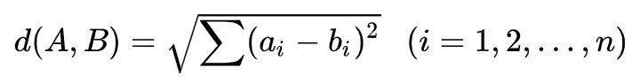
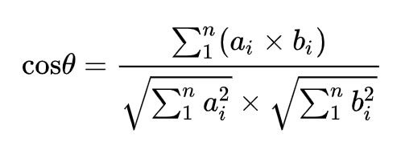
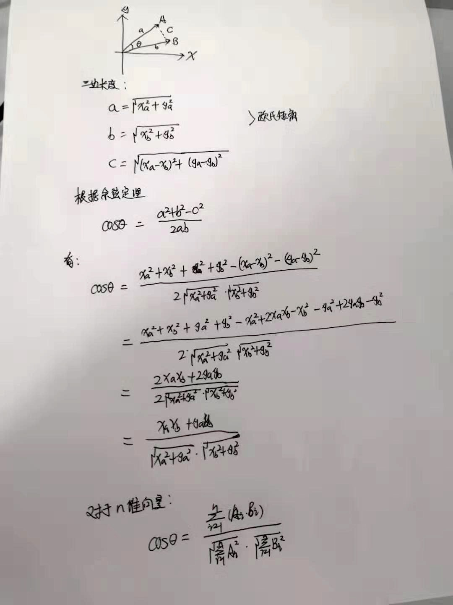
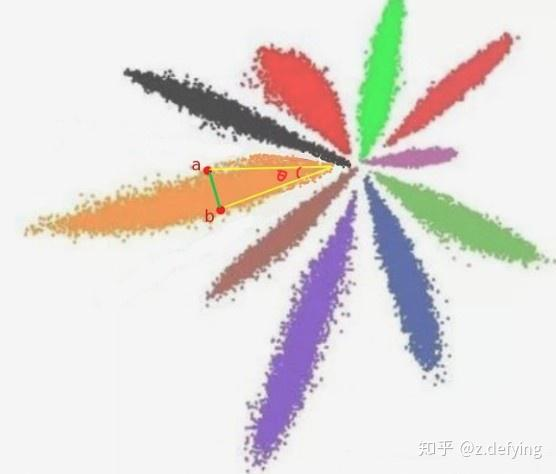
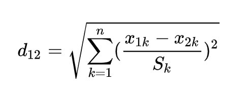
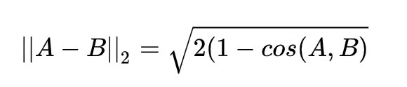
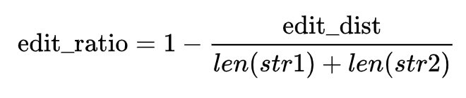

向量的距离度量¶
目录：
- 欧氏距离
- 余弦相似度
- 标准化欧氏距离
- 汉明距离
- 字符串相似度
在机器学习中通常用向量来表示每个样本，而计算向量的相似度可以衡量样本向量之间的差异。
计算向量的相似度主要有欧氏距离、余弦距离和汉明距离三种方法。
1、欧氏距离¶
在二维、三维或多维空间中的欧氏距离就是两点之间的直线距离，在n维空间中是两个点之间的实际距离：

利用欧式距离计算向量的相似度，欧式距离越小相似度越大。
1 | |
2、余弦相似度¶
把两个向量看成空间中的两条线段，都是从原点（[0, 0, ...]）出发，指向不同的方向。余弦相似度是利用两个向量之间的夹角的余弦值来衡量两个向量之间的余弦相似度。0度角的余弦值是1, 其他的任何角度的余弦值都不大于1, 最小值是-1, 从而两个向量之间角度的余弦值确定了两个向量是否指向同一个方向。两个向量的指向相同时, 余弦相似度为1, 当两个向量的夹角是90度时, 余弦相似度的值为0, 两个向量的指向完全相反时, 余弦相似度的值为-1(这个结果与向量的长度无关,仅仅与向量的指向有关)。
余弦相似度通常用于正空间,因此一般的值为0到1之间。这个界限对任意维度的向量空间都适用,而且余弦相似度最长应用于高维正空间。它通常应用于文本挖掘中的文件比较，另外，在数据挖掘领域,常用来度量集群内部的凝聚力。
两个向量之间的余弦值可以通过使用欧几里得点积公式求出： A.B = || A || || B || Cosθ
在n维空间中，对于向量A=(a1,a2,...,an)，B=(b1,b2,...,bn)，其余弦值为：

公式推导:

夹角余弦取值范围为[-1,1]。余弦值越大表示两个向量的夹角越小，则两个向量越相似；夹角余弦越小表示两向量的夹角越大，则两个向量差异越大。当两个向量的方向重合时夹角余弦取最大值1，当两个向量的方向完全相反夹角余弦取最小值-1。
两个向量夹角的余弦值为余弦相似度，如果想得到余弦距离，则将1减去余弦相似度即为余弦距离，余弦相似度的取值范围是[-1,1],方向相同的两个向量之间的相似度是1,余弦距离的取值范围是[0,2]。
1 2 3 4 5 | |
欧式距离和余弦距离的差异 ：
欧氏距离衡量的是空间各点的绝对直线距离，跟各个点所在的位置坐标直接相关；而余弦距离衡量的是空间向量的角度关系，更加体现在方向上的差异，而不是位置。
如果保持A向量不变，B向量朝原方向远离坐标原点移动，那么这个时候余弦距离是保持不变的（因为夹角没有发生变化），而A、B两点的欧式距离在发生改变。
比如下面 A, B 两个向量，都属于同一个类，它们的欧式距离就是绿线的长度，它们余弦相似度就是夹角 θ 余弦值。

欧氏距离和余弦距离各自有不同的计算方式和衡量特征，因此它们适用于不同的数据分析模型：
- 欧氏距离能够体现个体数值特征的绝对差异，所以更多的用于需要从维度的数值大小中体现差异的分析。
- 余弦距离更多的是从方向上区分差异，更多的用于使用用户的内容评分来区分兴趣的相似度和差异，同时修正了用户间可能存在的度量标准不统一的问题（因为余弦距离对绝对数值不敏感）。
- 如果特征向量维度很高（比如图像特征），余弦相似度在高维情况下依然保持“相同时为1，正交时为0，相反时为-1”的性质，而欧氏距离的数值则受维度的影响，范围是 (0, +∞]，余弦距离是计算 相似程度 ，而欧氏距离计算的是 相同程度 （对应值的相同程度）。
在 《百面机器学习》一书中举了几个例子来更好地理解这两者的差异：
当一对文本相似度的长度差距很大、但内容相近时，如果使用词频或词向量作为特征，它们在特征空间中的的欧氏距离通常很大；而如果使用余弦相似度的话，它们之间的夹角可能很小，因而相似度高。
统计两部剧的用户观看行为，用户A的观看向量为(0,1)，用户B为(1,0)；此时二者的余弦距离很大，而欧氏距离很小；我们分析两个用户对于不同视频的偏好，更关注相对差异，显然应当使用余弦距离。
而当分析用户活跃度，以登陆次数(单位:次)和平均观看时长(单位:分钟)作为特征时,余弦距离会 认为(1,10)、(10,100)两个用户距离很近；但显然这两个用户活跃度是有着极大差异的，此时我们更关注数值绝对差异，应当使用欧氏距离。
3、标准化欧氏距离¶
标准化欧氏距离是针对欧氏距离的缺点而作的一种改进。数据各个维度之间的尺度不同，会导致得到的欧式距离结果不同，那么判定向量是否相似会产生误差。
标准欧氏距离的思路：既然数据各维度分量的分布不一样，那对所有维度分别进行处理，先将各个维度分量都“标准化”到均值、方差相等，使得各个维度分别满足标准正态分布。假设样本集X的均值(mean)为m，标准差(standard deviation)为s，X的“标准化变量”表示为：
X* = (X - m) / s
则标准化欧氏距离公式为：

其中 sk 是第 k 维度的标准差，（此处举例只有两个点，但整个数据集中可能会有无数个点，根据数据集得到方差分布）
欧式距离标准化后，可以将空间想象成一个超球面（三维），欧氏距离就是球面上两点的直线距离，而向量余弦值等价于两点的球面距离，这两者本质上是一样的。
其向量的模长是经过归一化的，此时欧氏距离与余弦距离有着单调的关系。
将向量归一化，有 || A || = 1, || B || = 1
余弦距离 = 1 - A.B / (|| A || || B || ) = 1 - A.B
欧式距离的平方
|| A−B ||2 = || A ||2 + || B ||2 - 2A.B = 2(1-A.B)
所以，有如下欧式距离与余弦相似度的关系，

其中 || A−B ||2 表示标准欧氏距离，cos(A,B) 表示余弦相似度，(1−cos(A,B)) 表示余弦距离，在此场景下，那么使用余弦相似度和欧氏距离的结果是相同的。
余弦距离并不是严格意义上的距离,但根据数学上的定义,在一个集合中,如果一对元素可确定一个实数,使得非负性,对称性和三角不等式成立,则该实数可称为这对元素之间的距离。
- 非负性
根据上述的介绍,余弦距离的取值范围为[0,2],满足非负性的性质
- 对称性
dist(A,B)=1−cosθ=dist(B,A) 所以满足对称性
- 三角不等式
余弦距离是不满足三角不等式的性质的，推导略去。
所以余弦距离不是严格意义上定义的距离,但是他可以有效的体现特征向量在方向上的相对差异
4、汉明距离¶
汉明距离是使用在数据传输差错检测编码里面的，在通信中累计定长二进制字中发生翻转的错误数据位。
汉明距离是一个概念，它表示两个（相同长度）向量或字符串对应位置不同元素的个数。对两个字符串进行异或运算（不同则为1），并统计结果为1的个数，那么这个数就是汉明距离。
汉明距在图像处理领域有广泛的应用，是比较二进制图像非常有效的手段。计算一个数字的比特位包含1的个数有个小技巧：value &= value - 1，这个运算的结果就是把value最后一个1去掉，循环进行运算直到value等于0（所有的1都被去掉）就可以知道vaule中1的个数。
两个等长字符串s1与s2之间的汉明距离定义为将其中一个字符串变换成另外一个字符串所需要作的最小替换次数。例如字符串“1111”与“1001”之间的汉明距离为2。
1 2 3 4 5 6 7 8 9 10 11 | |
5、字符串相似度¶
比较字符串相似度最常见的办法就是：把一个字符串通过插入、删除或替换这样的编辑操作，变成另一个字符串，所需要的最少编辑次数，这种就是 编辑距离 （edit distance），也称为Levenshtein距离。
汉明距离是编辑距离的一种特殊情况，只计算等长情况下替换操作的编辑次数，只能应用于两个等长字符串间的距离度量。
安装：!pip install python-Levenshtein
1 2 3 4 5 6 7 8 9 10 11 12 13 14 15 16 17 18 19 20 21 22 | |
使用 Levenshtein.hamming 直接就可以计算两个字符串的汉明距离；而使用 Levenshtein.distance 计算两个字符串的编辑距离，字符串可以不等长。
使用 Levenshtein.ratio 可以计算两个字符串的相似率， 内部公式如下：

参考：¶
Understanding the Levenshtein Distance Equation for Beginners
凡本网注明"来源：XXX "的文/图/视频等稿件，本网转载出于传递更多信息之目的，并不意味着赞同其观点或证实其内容的真实性。如涉及作品内容、版权和其它问题，请与本网联系，我们将在第一时间删除内容！
作者: 程序员阿德 , 努力奋斗的阿贝拉
来源： https://zhuanlan.zhihu.com/p/79211661 , https://www.cnblogs.com/abella/p/11170592.html